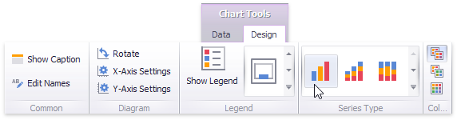

Series Overview
The Chart dashboard item supports a variety of series types - from simple bar and line charts to complex candle stick and bubble graphs.
This topic describes how to change the series type and specify various series options (for instance, how to use secondary axis or enable point labels).
Series Types
To switch between series types in the Dashboard Designer, click the Options button next to the required data item (or placeholder) in the Values section.
In the invoked Series Options dialog, select the required series type and click OK.

You can also do this using the Series Type gallery in the Design Ribbon tab.

Series Options
To manage common series options, use the Common Options tab of the Series Options dialog.
Plot on secondary axis - Specifies whether or not the secondary axis is used to plot the current series.
Ignore empty points - Specifies whether or not empty points are ignored when plotting the current series.
Note that this option is in effect for the Line, Area and Range Area series.
Show point markers - Specifies whether or not to show point markers for the current series.
Note
Note that point markers are always shown when Master Filtering is enabled for the Chart dashboard item.
Note that this option is in effect for the Line and Area series.
Series Point Labels
The Point Label Options tab of the Series Options dialog allows you to enable series point labels and manage their settings.
Show point labels - Specifies whether or not to show point labels for the current series.
Content - Specifies the type of content displayed within point labels.
Overlapping mode - Specifies the label overlap mode.
Note
This option is not in effect when the dashboard is displayed in the Web Viewer.
Orientation - Specifies the orientation of point labels.
Bar options
Note
These settings are in effect for Bar series only.
- Show for zero values - Specifies whether or not to show labels for points with zero values.
- Position - Specifies the position of point labels relative to bars.